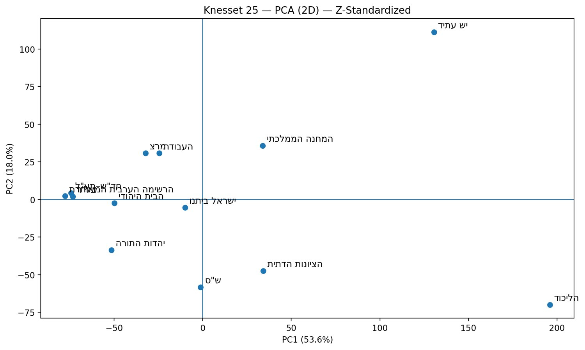
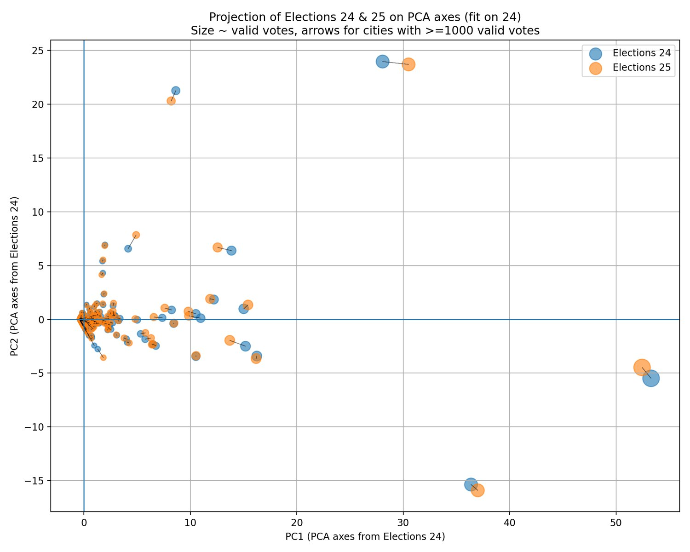

Voting-pattern analysis with PCA
Data Mining course. Python, pandas, scikit-learn and matplotlib.
Principal component analysis of two Knesset elections maps parties and localities by how similarly they vote. Z-score standardization kept the most information in two dimensions, and projecting both elections onto the same axes made them directly comparable.
Ballot boxes, Knesset 25
11,707
After removing external envelopes
Ballot boxes, Knesset 24
12,127
After removing external envelopes
Parties above 1%
13
Kept for the analysis
Localities compared
1,211
Present in both elections
Variance explained by the first two components
Knesset 25, ballot-box level. Z-score was selected because it compares relative voting patterns and retained the most variance.
What the components show
Interpretation from the course report.
| Component | Pattern it separates |
|---|---|
| PC1 | Voting patterns of Arab-sector parties against large Jewish-sector parties |
| PC2 | Religious and traditional parties against center and left parties |
| PC3 (3D model) | Differences within groups, such as between Haredi parties and other right-wing parties |
Party map, Z-score PCA
Knesset 25. Parties that sit close together have similar voting patterns across ballot boxes.

Localities across two elections
Fitted on Knesset 24 only. Most localities moved little along PC1, with larger shifts along PC2 in some localities.
